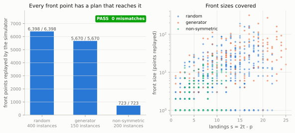
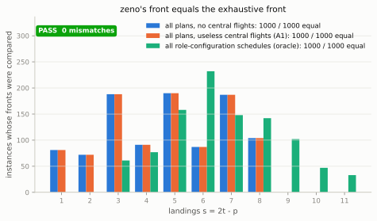
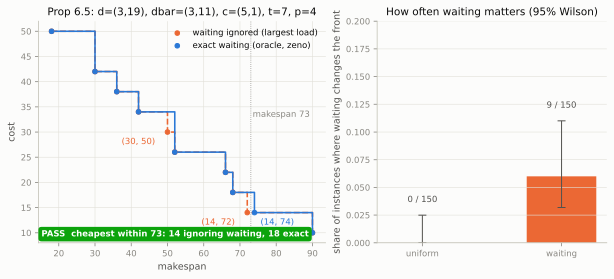
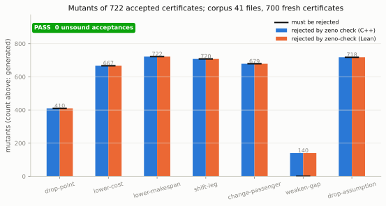
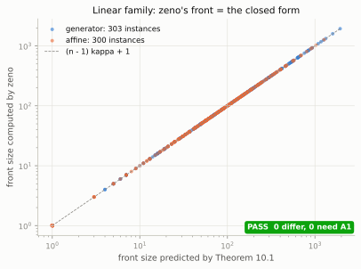

Experiments
Validation of the solver and of the theory, performances, and examples of instances
We validate ZenoSolver and the statements of the previous sections in a campaign of ten experiments, in the directory experiments/ of the repository. Each experiment is deterministic (seed 0), calls the binaries of the repository, and compares them with references written independently of the solver: exhaustive searches over all plans, an oracle over role-configuration schedules, a CP-SAT model, the Lean solver and checker, and a plan simulator that shares no code with the solver. It writes its verdict with the pass criterion and the metrics, a manifest of provenance (commit, versions, checksum of every binary), and its figures. All experiments have been performed on a 16-core arm64 machine running macOS 15.7. A pass on a search (E6, and E10 on the linear family) is evidence on the sampled instances, not a proof. §11 of the theory note lists further checks behind individual statements.
| Tests | Reference | Result | |
|---|---|---|---|
| E1 | independent simulator of zeno --plans |
12,791 points replayed, 0 failures | |
| E2 | Theorem 4.7, Corollary 4.8 | exhaustive search over all plans; oracle | 3,000 fronts, 0 differ |
| E3 | CP-SAT model of \(E(T)\); Lean zeno-front |
23,346 levels, 0 mismatches | |
| E4 | Theorem 6.9, Corollary 6.10 | all plans; all simple plans | 1,990 fronts, 0 differ |
| E5 | schedules with and without waiting | 14 without waiting, 18 with | |
| E6 | all plans, shortest central flights | 255 gaps, 0 counterexamples | |
| E7 | wall time | time \(\sim\) levels\(^{0.39}\) | |
| E8 | mutated certificates, two checkers | 0 unsound acceptances | |
| E9 | closed form | 92,550 points, 0 differ | |
| E10 | §5, Conjecture 10.2 | exact fronts | greedy exact on 82.0% (non-linear), 100% (linear) |
E1: achievability
Hypothesis. Under (S), an admissible partition is flown by a plan whose makespan is its largest load (Theorem 4.1 machine-checked), so every point of the front ZenoSolver computes is reached by a real plan.
Protocol. For every front point, zeno --plans prints a plan, and the independent simulator replays it against the plan semantics and recomputes its cost and makespan. The instances are 400 random symmetric ones (\(n \le 8\), \(p \le 6\), \(t \le p + 8\), \(d \in [1, 30]\), \(c \in [0, 50]\), half with costs anti-correlated to durations), 150 of the generator (\(n \le 12\), \(p \le 6\), \(t \le p + 10\)), and 200 non-symmetric ones (\(n \le 4\), \(p \le 4\), \(t \le p + 4\), \(d, \bar d \in [1, 20]\)), whose achieved points come from templates (Lemma 6.3).
Result. 12,068 symmetric and 723 non-symmetric front points were replayed; no plan failed the simulator or missed its point. Pass

E2: the symmetric front
Hypothesis. Under (S) and (A1), every plan is weakly dominated by an admissible partition (Theorem 4.7 machine-checked), so the Pareto front is the set of breakpoints of \(E\) (Corollary 4.8 machine-checked), which ZenoSolver computes.
Protocol. Two exhaustive references. truth is a breadth-first search over all plans of the planning problem, with no landing count, pattern or route shape assumed, flights between central cities being absent or present but useless: 1,000 instances in each regime, with \(n \le 3\), \(p \le 3\), \(t \le \min(5, p + 3)\), \(d \in [1, 6]\), \(c \in [0, 9]\). zenoOracle enumerates every role-configuration schedule with its exact waiting, at sizes truth cannot reach: 1,000 instances with \(n \le 5\), \(p \le 4\), \(p < t \le 6\), \(d \in [1, 20]\), \(c \in [0, 30]\).
Result. 2,000 comparisons with all plans and 1,000 with the oracle; none differs, and no reference timed out. Agreement with the search over all plans is the direct test of the converse: no plan with extra landings, hand-offs or flights between central cities does better. Pass

E3: the link-forest dynamic program
Hypothesis. The link-forest dynamic program returns \(E(T)\) (Theorem 7.5 machine-checked), at sizes where enumeration is out of reach.
Protocol. Two references share no code with the C++ solver. A CP-SAT model of \(E(T)\), with admissibility as a 0/1 parity matrix, checks that every front point \((C, M)\) has \(E(M/2) = C\), that the level just below the next point still costs \(C\), and that the level below the fastest point is infeasible, which pins the whole step function. The Lean solver zeno-front recomputes the front from each certificate. The instances are 200 medium ones (\(n \le 8\), \(p \le 6\), \(t \le 16\), \(d \le 40\), \(c \le 60\)) and 120 large ones (\(n \le 12\), \(p \le 10\), \(t \le 28\), \(d \le 80\)).
Result. 23,346 levels over 320 instances (11,676 front points, up to 400 per front) agree with CP-SAT, without timeout, and the Lean front equals the C++ one on all 320. On 37 instances the certificate needed the forest bound, that is, \(L < E\) at some level, the case where \(E\) is not given by the relaxation. Pass

E4: the non-symmetric front
Hypothesis. Under (A1-NS), every plan is weakly dominated by a role configuration whose template is no later (Theorem 6.9 machine-checked), so the Pareto front is the Pareto set of (cost, least makespan) over role configurations (Corollary 6.10 informal, parts in Lean), and the bounds and the search of ZenoSolver are sound.
Protocol. On tiny instances (\(n \le 2\), \(p \le 3\), \(t \le \min(5, p + 3)\), \(d, \bar d \in [1, 6]\), \(c \in [0, 6]\), up to \(2t - p + 3\) landings), the search over all plans, with flights between central cities absent or useless, is compared with the front of role-configuration schedules with exact waiting, and with ZenoSolver whenever it closes its bracket. On larger instances, 800 with \(n \le 3\), \(p \le 4\), \(t \le 7\), half uniform and half shaped like Proposition 6.5, the reference is the front of every simple plan with clean journeys, any hand-offs and up to \(2t - p + 1\) landings.
Result. 1,190 comparisons with all plans and 800 with all simple plans; none differs from the role-configuration front. ZenoSolver closed its bracket on all 1,990 and matched the reference, using the gap kinds roles (2,048 gaps), balanced (1,226), lagrangian (834), relaxed (91) and search (37). Pass

E5: harmful waiting
Hypothesis. If waiting could always be avoided (Conjecture 6.5), the Pareto front would be the Pareto set of (cost, largest role load) over role configurations. Proposition 6.5 informal says it is not.
Protocol. On the instance of Proposition 6.5, the front of all simple plans with waiting ignored (makespan taken as the largest load) is compared with the exact fronts of the oracle, of the role-configuration schedules and of ZenoSolver. At the configuration level, random balanced role configurations under (AΔ-path), with a plane performing two patterns \(\bar B\) and one performing two patterns \(B\), are scheduled with every order and matching. At the front level, on 300 random instances (\(n \le 3\), \(p \le 4\), \(t \le 7\)), half uniform and half shaped like Proposition 6.5, the front with waiting is compared with the front without.
Result. Ignoring waiting gives the points \((14, 72)\) and \((30, 50)\), which no plan reaches: the cheapest plan within makespan 73 costs 18, not 14, and the three exact methods agree. Harmful waiting is rare among configurations: 1 in 900,143 with random crossing phases, 29 in 1,011,529 and 28 in 506,408 with one shortest crossing per plane. It changes the front of 9 of 150 instances shaped like Proposition 6.5 (95% interval 3.2% to 11.0%) and of none of 150 uniform ones (0% to 2.5%). Pass

E6: the converse without (A1), a targeted search
Hypothesis. Under (S) and (AΔ), every plan is still weakly dominated by an admissible partition (Theorem 4.10 machine-checked). A plan can beat the admissible-partition front only in a gap where the relaxation \(L\), valid for every plan, lies strictly below \(E\): the gaps a certificate marks forest.
Protocol. 100,000 random symmetric instances (\(n \le 3\), \(p \le 3\), \(p < t \le 6\), durations in \([1, 9]\), costs in \([1, 30]\)) are drawn, and those with a forest gap are kept. Their true front is computed by the search over all plans, with every flight between central cities as short as the triangular inequality allows, \(|d_a - d_b|\), and up to \(2t - p + 2\) landings. A counterexample is a plan inside a gap that costs less than \(E\).
Result. 231 instances have a forest gap; in all 255 of their gaps, the cheapest plan costs exactly \(E\), and no search timed out. This search is independent of the proof of Theorem 4.10, written and machine-checked. Pass

E7: performances
Hypothesis. The Pareto front is computable in pseudo-polynomial time (Corollary 8.3 informal): over the range of levels \([T_{\rm lo}, T_{\rm hi}]\), the link-forest program takes \(O(n\,q_{\max}^2 s^2\,T_{\rm hi}(T_{\rm hi} - T_{\rm lo} + 1))\) time, so the time should grow at most quadratically with the number of levels.
Protocol. Sweeps of one parameter at a time, median of 3 runs: the duration scale -r on the square-root family (\(n = 20\), \(t = 12\), \(p = 4\)), whose number of levels grows with -r, and \(n\), \(t\) and \(p\). Then single runs on a grid of \((n, t, p)\) with a timeout of 60 s. Every run uses all 16 cores. Other jobs shared the machine (load average 18.6 to 38.8), so the times are upper bounds.
Result. On the duration sweep, from 16 to 173,606 levels, the time grows as the number of levels to the power 0.39, below the degree 2 of the bound. 16 of the 24 grid points finished within 60 s, the largest being \(n = 1000\), \(t = 100\), \(p = 10\), in 59 s with 18,982 front points; others include \(n = 5000\), \(t = 20\), \(p = 4\) (31 s) and \(n = 100\), \(t = 500\), \(p = 50\) (17 s). Instances such as \(n = 500\), \(t = 200\), \(p = 20\) or \(n = 100\), \(t = 1000\), \(p = 10\) timed out. The time is not monotone in \(p\): for \(n = 50\) and \(t = 60\) it was 3.5 s with \(p = 2\), 1.0 s with \(p = 5\), 9.1 s with \(p = 10\), 114 s with \(p = 20\) and 0.04 s with \(p = 40\). As \(p\) grows, the number of levels shrinks, from 35,814 to 1,215, while the trees of a link forest may have up to \(q_{\max} = \min(p, t - p + 1)\) planes. Pass

Performances on the benchmark suites
The repository also times ZenoSolver end to end on fixed suites of instances (bench/): an Apple M4 Max with 16 cores, all cores used, median of 3 runs and a timeout of 30 s per run. All 66 instances are solved, the slowest in 61 ms. Process start-up takes about 3 ms, the floor of every timing.
In Table 2, we report the time to solve an instance when increasing simultaneously \(n\) and \(t\) with two planes, on the default generator, \(d_i = i\) and \(c_i = n + 1 - i\). This is the linear family, so the size of the Pareto front is known in advance: with \(2t - p = 2n - 2\) landings and \(\kappa = n - 1\), Theorem 10.1 gives \((n - 1)\kappa + 1 = (n - 1)^2 + 1\) points, which the solver finds on every instance.
paper-table1).
| \(n\) | \(t\) | \(p\) | Front size | \((n - 1)^2 + 1\) | Time |
|---|---|---|---|---|---|
| 3 | 3 | 2 | 5 | 5 | 2.2 ms |
| 4 | 4 | 2 | 10 | 10 | 2.2 ms |
| 5 | 5 | 2 | 17 | 17 | 2.2 ms |
| 6 | 6 | 2 | 26 | 26 | 2.1 ms |
| 7 | 7 | 2 | 37 | 37 | 3.3 ms |
| 8 | 8 | 2 | 50 | 50 | 2.1 ms |
| 9 | 9 | 2 | 65 | 65 | 2.1 ms |
| 10 | 10 | 2 | 82 | 82 | 2.1 ms |
Larger instances of the same family, and the generator’s other families on \(n = 10\), \(t = 8\), \(p = 3\) (with -r 100 for the logarithm and the square root), behave alike (Table 3).
regimes, all of the linear family, and four families of the suite families.
| Instance | \(n\) | \(t\) | \(p\) | Front size | Time |
|---|---|---|---|---|---|
| many cities, few passengers | 200 | 3 | 2 | 399 | 3.7 ms |
| balanced | 20 | 6 | 2 | 96 | 3.6 ms |
| \(p\) close to \(t\) | 8 | 26 | 25 | 15 | 3.4 ms |
| medium | 50 | 30 | 5 | 540 | 8.1 ms |
| large | 100 | 60 | 10 | 1,090 | 60.6 ms |
| logarithmic durations and costs | 10 | 8 | 3 | 46 | 3.7 ms |
| square-root durations and costs | 10 | 8 | 3 | 81 | 3.7 ms |
| powers of two | 10 | 8 | 3 | 46 | 5.0 ms |
| staircase | 10 | 8 | 3 | 133 | 3.7 ms |
E8: certificates
Hypothesis. A certificate whose four obligations hold lists exactly the Pareto front (Theorem 9.1 machine-checked), so a sound checker never accepts a false front.
Protocol. Both checkers, zeno check in C++ and zeno-check in Lean, are run on the 41 certificates of the test corpus, on 700 fresh certificates (400 symmetric, format version 1, and 300 non-symmetric, version 2), and on mutants of the 722 accepted ones: a point dropped, a cost or a makespan lowered, a flight shifted, a passenger changed, a gap weakened to relaxed, an assumption dropped. A mutant must be rejected when its front differs from the true one, when one of its plans fails the simulator, or when it lacks an assumption that one of its bounds needs.
Result. Both checkers give the expected verdict on the corpus and accept every fresh certificate. Of 4,056 mutants, 3,904 had to be rejected, and neither checker accepted any of them; the two checkers never disagree. Pass

E9: the linear family
Hypothesis. On the linear family of the default generator, the Pareto front has the closed form of Theorem 10.1 informal (see below), and \(L = E\) at every level, so it holds whatever the flights between central cities.
Protocol. 300 data files with \(d_i = r_0 i\) (\(r_0 \le 7\)) and \(c_i = \alpha - \beta i\) (\(\beta \le 6\), zero for 10% of them, \(\alpha \in [\beta n, \beta n + 40]\)), \(n \le 30\), \(p \le 8\), \(t \le 25\); and 300 generator instances -C 3 -D 3 with -r 1 or 10, \(n \le 40\), \(p \le 10\), \(t \le 30\), plus three larger instances.
Result. 603 instances and 92,550 front points, the largest front having 1,939 points, all equal to the closed form; no certificate needed the forest bound. The front sizes 1,090 (\(n = 100\), \(t = 60\), \(p = 10\)), 540 (\(n = 50\), same \(t\) and \(p\)) and 399 (\(n = 200\), \(t = 3\), \(p = 2\)) are reproduced. Pass

E10: a natural greedy heuristic
Hypothesis. A natural heuristic computes the makespan of each list of \(2t - p\) cities greedily, giving the longest durations first to the plane with the smallest current duration, in the manner of the longest-processing-time rule. It is not exact in general (§5 informal, parts in Lean), and Conjecture 10.2 states that it is exact on the linear family. How often is it exact?
Protocol. greedy.cpp implements the heuristic and shares no code with the exact solver. It is first validated on the 27 golden instances: it must differ from the golden fronts exactly on the two instances on which it is known to fail, lpt-counterexample and n3t5p2-C1D4r10, where it misses the point \((260, 60)\). Then, on a grid with \(2 \le n \le 8\), \(2 \le t \le 10\) and \(1 \le p \le \min(t, 6)\), each cell holds three random instances with uniform costs, three with anti-correlated costs, three of the generator’s non-linear families, and three of the linear family; the greedy front is compared with the exact one.
Result. Outside the linear family, the greedy is exact on 2,274 of 2,772 instances (82.0%, 95% interval 80.6% to 83.4%) and finds 93.9% of the front points. With \(p = 1\) or \(t - p \le 2\) it is exact on all 1,512 instances; every miss in the sample has \(p \ge 2\) and \(t - p \ge 3\), an observation rather than a claim. On the linear family it is exact on 924 of 924 instances (95% interval 99.6% to 100%), evidence for Conjecture 10.2 but not a proof. No greedy point beats the exact front. Pass


Examples of Instances
In Figure 12, we display some examples of the variety of Pareto Fronts that it is possible to obtain by modifying the functions to generate \(d\) and \(c\), on symmetric instances with \(n = 7\), \(t = 8\) and \(p = 3\), for which the fronts are exact. The top left picture shows regular patterns with a uniform disposition of points. This instance is obtained with a logarithmic cost and linear durations. The top right figure is obtained by using square-root durations and displays a less regular point distribution over the front. By using slightly more complex combination of generators, it is possible to obtain non-regular fronts with non-uniform distribution such as the bottom two figures: on the left, costs \(2^i\) and logarithmic durations, while on the right, durations in a staircase, whose points come in clusters.
-r 10, with four generators of costs (-C) and durations (-D): logarithmic costs and linear durations (top left), linear costs and square-root durations (top right), costs \(2^i\) and logarithmic durations (bottom left), linear costs and durations in a staircase (bottom right). Each panel spans its own ranges of cost (vertical) and makespan (horizontal).
With its default options (-C 3 -D 3), the generator produces durations \(d_i = r_0 i\) and costs \(c_i = r_0(n + 1 - i)\): cost is affine and decreasing in duration, and the durations form the full progression \(r_0, 2r_0, \dots, n r_0\). Dividing the durations by \(r_0\) gives \(d_i = i\) and \(c_i = \alpha - \beta i\) with \(\alpha = r_0(n + 1)\) and \(\beta = r_0\), and the Pareto front then has a closed form.
Theorem 10.1 informal Assume (S), \(d_i = i\) and \(c_i = \alpha - \beta i\) for \(i = 1, \dots, n\), with \(\beta \ge 0\) and \(\alpha \ge \beta n\). Let \(s = 2t - p\), \(q_0 = \lfloor s/p \rfloor\) and \(\rho = s - p q_0\). For every integer \(T \ge \kappa\), \[L(T) = E(T) = \alpha s - \beta\,\Psi(T), \qquad \Psi(T) = (p - \rho)\min(T,\ n q_0) + \rho\min(T,\ n(q_0 + 1)),\] and \(L(T) = E(T) = \infty\) for \(T < \kappa\). Whatever the flights between central cities, the Pareto front is \[\mathcal F = \{(\alpha s - \beta\,\Psi(T),\ 2T) : \kappa \le T \le n\kappa\} \text{ if } \beta > 0, \qquad \mathcal F = \{(\alpha s,\ 2\kappa)\} \text{ if } \beta = 0,\] with makespans in units of \(r_0\). For \(\beta > 0\) it has \((n - 1)\kappa + 1\) points.
(The theory note writes \(\Phi\) for \(\Psi\).)
Sketch. With affine costs, the cheapest group of \(m\) landings within \(T\) costs \(\alpha m - \beta\min(T, nm)\), which is convex in \(m\), so balanced group sizes \(q_0\) and \(q_0 + 1\) minimise \(L\); giving equal groups the same cities makes all even groups equal, which is admissible by Lemma 2.9, so \(L = E\). As \(L\) bounds every plan under (S) alone (Lemma 3.4), no assumption on central flights is needed (full proof).
The theorem does not cover offset progressions \(d_i = a + bi\) with \(a > 0\), on which \(L < E\) occurs (for \(d = (5, 7, 9, 11)\), \(c_i = 24 - 2 d_i\), \(t = 7\), \(p = 4\): \(L(20) = 80 < E(20) = 84\)), nor the generator’s other families, which have no closed form and are solved by the general algorithm. On the linear family, the greedy heuristic of E10 also appears to be exact:
Conjecture 10.2 informal The greedy heuristic of §5 reaches the front of Theorem 10.1.
It is open; the theory note reports equal fronts on 115 instances, and E10 on 924 more. Correctness does not depend on it, since the front is in closed form.